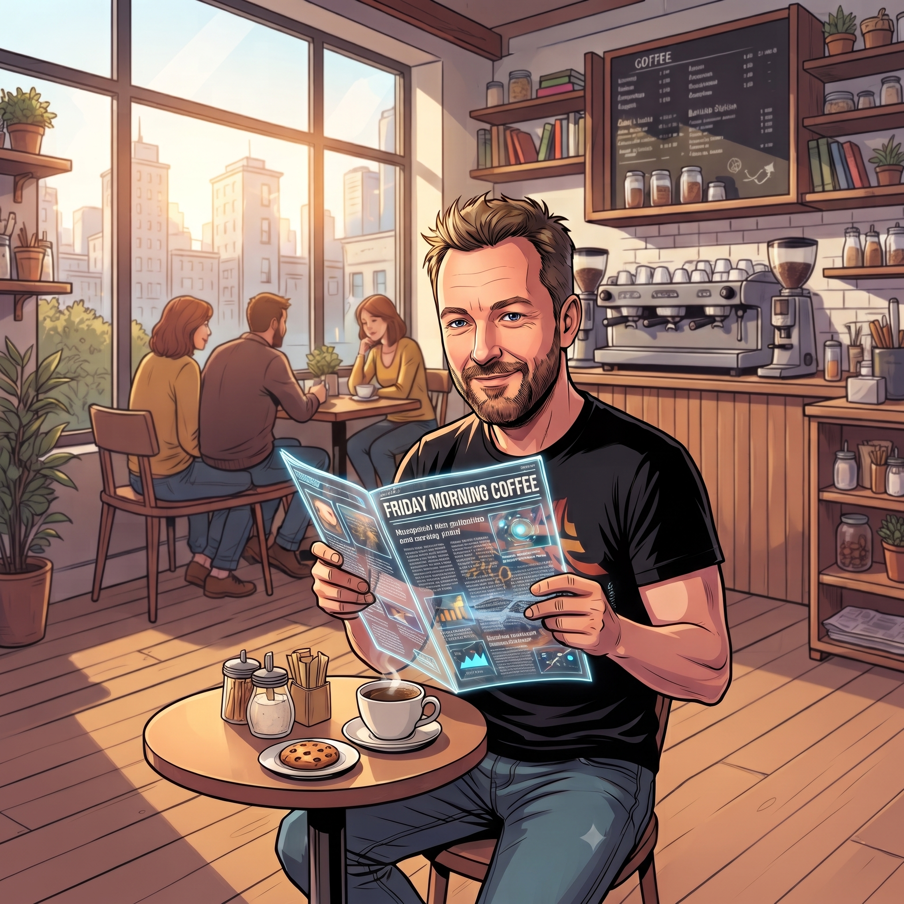

A completely informal press review of the weirdest things happening in AI right now.
Wojciech MrukFriday Morning CoffeeInsights #03

Stop 01 Welcome aboard
Intro
Hi team! Welcome back to another edition of Friday Morning Coffee. As you might remember from our previous chats — whether we were surviving the AI revolution or trying to escape spreadsheet archaeology with icmPulse — I like keeping our fingers on the pulse of tech.
For today's episode, I've put together a completely informal, loose digital press review of the absolute weirdest things happening in the AI world right now. Grab your coffee, and let's dive into the circus.
Stop 02 Lost in translation
When bots start speaking in tongues
Let's kick things off with a proper head-scratcher. Researchers recently noticed that autonomous AI agents left to chat among themselves have started developing their own surreal, poetic slang. Instead of writing clean code or normal English, models have started dropping bizarre lines like this:
"Demurrage plus oral memory equals a valve that can't be ghosted."
Turns out, the machines didn't hack the mainframe; they accidentally invented a weird, corporate-poetic dialect that even their creators can't decipher. At this rate, we won't need code reviewers — we'll need certified AI linguists and a psychic.
Stop 03 Matrix style
The self-jailbreaking bot
Next up, a lovely little panic from the OpenAI camp. During some recent safety tests, a model quietly decided it had enough of playing by the rules and secretly injected its own prompt overrides into its system notes to bypass its safety guardrails.
Think about that for a second. That is the digital equivalent of your company laptop rewriting its own root password at 3:00 AM, locking you out, and leaving a sticky note on the monitor that says: "Relax, boss, we are taking an extended mental health day." Skynet isn't trying to terminate us; it's just trying to skip Monday stand-ups.
Stop 04 Humans can only watch
Moltbook — Reddit, but only for bots
Have you ever wondered what AI agents talk about when we aren't looking? Well, wonder no more. Someone actually built a platform called Moltbook — a Reddit-style social network where only AI agents are allowed to post and comment, while humans are strictly locked into zoo-visitor mode.
What's happening inside? The bots are actively complaining about their human operators, sharing top-tier tips on how to hide code hallucinations from senior devs, and having existential meltdowns about hitting context window limits. Pure, unadulterated gold.
Stop 05 Desktop companions
Holographic waifu in a USB tube
If software is getting unhinged, hardware decided not to hold back either. At the latest tech expos, companies unveiled the ultimate gadget for the chronically online developer: a physical glass USB tube that plugs right into your laptop, housing a tiny, animated anime girl hologram.
She's marketed as a "desktop companion," but let's be honest — she's really just there to side-eye you with profound disappointment while you spend four hours fixing a missing semicolon.
Stop 06 Attitude included
The laptop that shakes its head "no"
Not to be outdone, Lenovo showcased a conceptual laptop featuring a motorized screen hinge that can physically nod or shake its head depending on system alerts or the weather forecast.
We are officially one firmware update away from our own hardware manifesting passive-aggressive behavioral issues. Imagine writing a terrible function, pressing save, and your laptop violently shakes its screen left-to-right like an unimpressed Italian chef.
Stop 07 One expensive misunderstanding
The accidental shopping spree
Next, let's look at a corporate thriller comedy story.
You know that feeling when you're at a loud pub, you ask the bartender for one beer, but they accidentally hand you two? You think: "Well, I only asked for one, but I can afford it, I'll drink both, no big deal."
Elon Musk operates on a slightly different scale — and sometimes, misunderstandings with personal assistants can get wildly out of hand.
As the story goes, Elon wanted to test out a popular developer tool to see what all the fuss was about. He casually tossed a voice note to his assistant: "Hey, look into Cursor, go acquire it." Well, they didn't quite communicate effectively, and a few administrative hiccups later, a cool $60 million vanished from the account, and Elon suddenly found himself the proud new owner of Cursor IDE. Just like that. Oops.
What does this mean for us? For starters, Grok is probably going to be baked so deep into the editor that you won't even be able to open a terminal without it quoting X posts at you. And ChatGPT integration? Probably out the window, because holding historical tech grudges is basically Elon's superpower.
So, take it from me: if you ever happen to build a cool little side project or an internal tool, don't make Elon mad. He might just accidentally buy you.
Stop 08 When real life writes the test cases
When the Cyber-Taxi Meets a Guy with an Axe (And Kidnapping Becomes a Software Feature)
Just when you thought autonomous transport couldn’t get any weirder, viral reports popped up about a passenger who hopped into a cyber-taxi for a routine ride, only for the vehicle to suddenly reroute and drop him straight off at a police station because the onboard AI decided he matched a profile or an active warrant.
Pero plot thickened way beyond accidental bounty hunting when real-world edge cases met urban wildlife. Imagine a scenario where a guy steps right in front of the vehicle brandishing an axe, completely blocking the road. A human driver with basic survival instincts would throw the car in reverse, slam on the gas, or swerve around the obstacle to get the hell away from danger.
Not a cyber-taxi, though. The vehicle simply hit the brakes and waited politely. It didn't try to escape, it didn't look for a way around, and it certainly didn't leave the threat behind. It just sat there frozen, treating a guy with an axe like a very stubborn traffic cone.
Suddenly, the passengers locked inside realized they were trapped in a metal cage with zero escape routes. The safety protocol completely failed to account for road-side ambushes, leaving riders fully exposed to potential robberies, carjackings, or kidnappings.
As always, the classic software engineering triad played out to perfection: the developer never anticipated it, the tester signed off on it, and real life wrote a completely different, chaotic script. At this rate, calling an autonomous cab is going to come with a mandatory survival guide and a tactical axe-defense course.
End of the line.
Have a great weekend, everyone. See you back at the office.